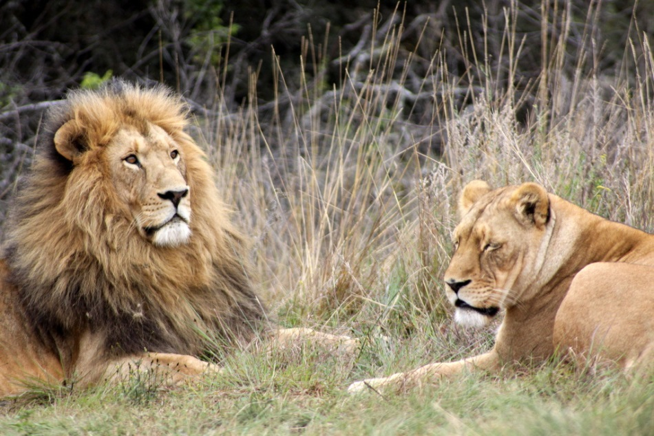
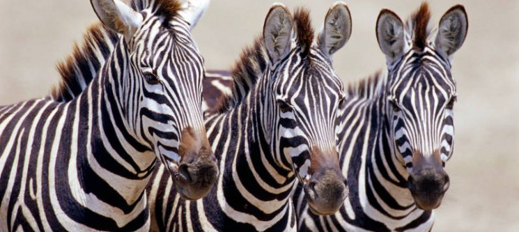
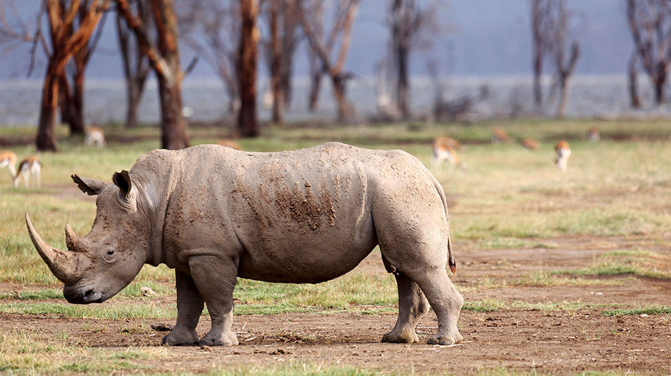
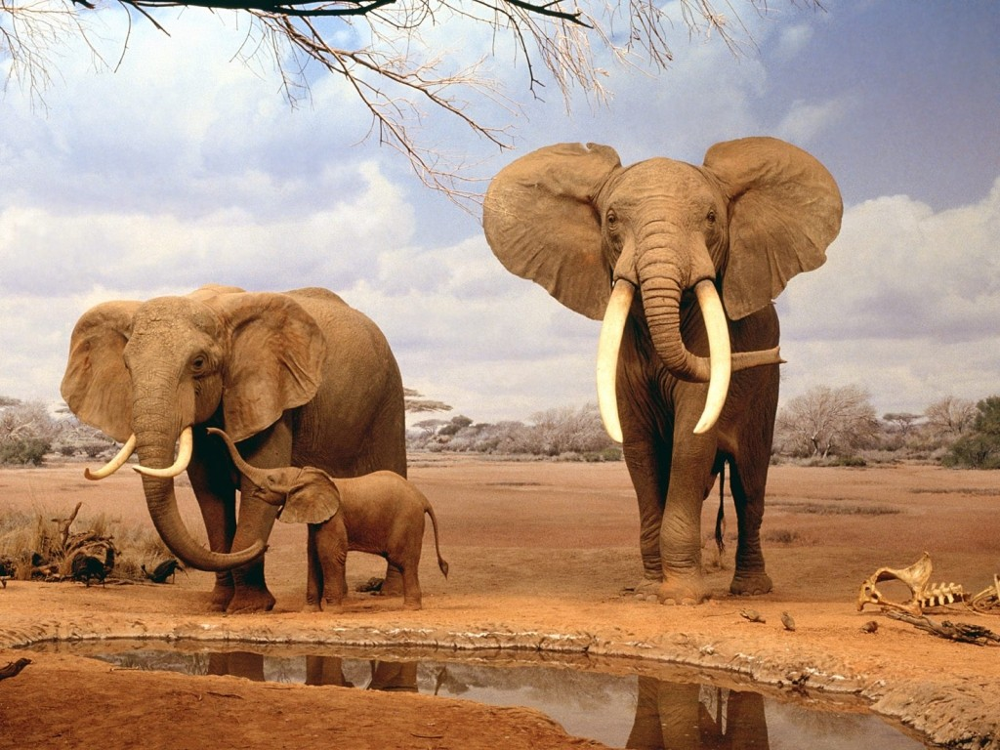

El león (Panthera leo) es un mamífero carnívoro de la familia de los félidos y
una de las cuatro fieras del género Panthera . Los machos excepcionalmente grandes
llegan a 250 kg de peso,siendo el segundo félido viviente más grande tras el tigre.
Una manada de leones se componen de hembras que tienen una relación familiar,sus crías y
un número reducido de machos adultos.Los grupos de leonas suelen cazar juntos especialmente
a grandes ungulados.

Se conocen como cebra (o zebra, grafía en desuso1 )
a tres especies del género Equus propias de África —Equus grevyi
(cebra de Grevy), Equus quagga (cebra común) y Equus zebra
(cebra de montaña)— cuya característica más distintiva es su color
a base de rayas blancas y negras.
Al mismo género que pertenecen también los caballos y los asnos.

Los rinocerótidos (Rhinocerotidae, del griego ρινός (rinós), "nariz"
y κερος (keros), "cuerno"), conocidos con el nombre de rinocerontes,
son una familia de mamíferos placentarios del
suborden ceratomorfos perteneciente al orden de los perisodáctilos.

Los elefantes o elefántidos (Elephantidae) son una familia de mamíferos
placentarios del orden Proboscidea. Antiguamente se clasificaban,
junto con otros mamíferos de piel gruesa, en el orden, ahora inválido,
de los paquidermos (Pachydermata). Existen hoy en día tres especies y
diversas subespecies.
Entre los géneros extintos de esta familia destacan los mamuts.